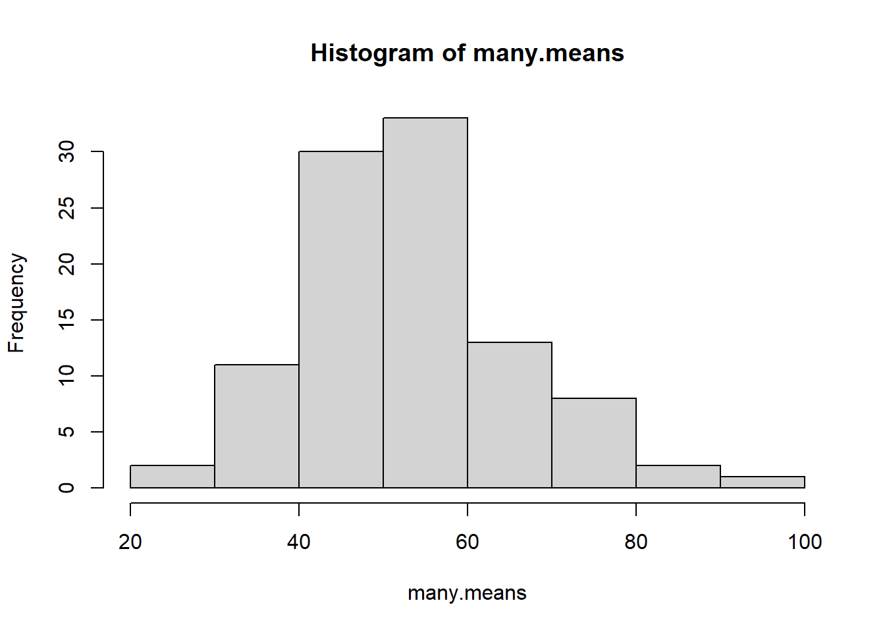

stat.phd <- readr::read_csv(here::here("data", "StatisticsPhD.csv"))Foundations of Statistical Estimation
We cover the theoretical concepts of statistical estimation.
Introduction
In this section we review the basic concepts underlying the selection of an estimator of a population parameter, the method for evaluating its goodness, and the concepts involved in interval estimation. Because the bias and the variance of estimators determine their goodness, we need to review the basic ideas concerned with the expectation and variance of a random variable. This set of notes follows Lohr 2.2
Statistical inference centers around using information from a sample to understand what might be true about the entire population of interest. If all we see are the data in the sample, what conclusions can we draw about the population? How sure are we about the accuracy of those conclusions?
On April 29, 2011, Prince William married Kate Middleton in London. The Pew Research Center reports that 34% of US adults watched some or all of the royal wedding. How do we know that 34% of all US adults watched? Did anyone ask you if you watched it? In order to know for sure what proportion of US adults watched the wedding, we would need to ask all US adults whether or not they watched. This would be very difficult to do. As we will see, however, we can estimate the population proportion parameter quite accurately with a sample statistic, as long as we use a random sample. In the case of the royal wedding, the estimate is based on a poll using a random sample of 1006 US adults.
- Statistical inference: The process of drawing conclusions about the entire population based on the information in the sample.
- Parameter: A number that describes the entire population. \(\mu\), \(p\), \(\tau\)
- Statistic: A number calculated from a sample. \(\bar{x}\), \(\hat{p}\), \(\hat{\tau}\).
Generally our goal is to know the value of the population parameter exactly but this usually isn’t possible since we usually cannot collect information from the entire population.
Instead we can select a sample from the population, calculate the quantity of interest for the sample, and use this sample statistic to estimate the value for the whole population.
The value of a statistic for a particular sample gives a point estimate of the population parameter. If we only have the one sample and don’t know the value of the population parameter, this point estimate is our best estimate of the true value of the population parameter.
After we have a little more mathematical terminology and foundation, we’ll come back to what we mean by “best estimate”, and examine how we can determine if something is a “good” estimate.
Expected Values
Generally we want to understand some measured characteristic \(y\) about the units in the population.
Example: University parking garages
Consider the population of 4 universities \(U\) in the North State (Humboldt, Chico, Sac, Davis), and we are interested in knowing the total number of campus owned parking garages at these campuses.
\[ U = \{A, B, C, D\} \]
The population total \(\tau\) would then be calculated as
\[ \tau = \sum_{i=1}^{N}y_{i} \] where the \(\sum\) symbols means to sum over all the values of \(y_{i}\) for all \(i=1, \ldots, N\) units in the population.
However the nature of sampling means that \(y_{i}\) is not observed for every unit in the population. In this case, we are going to consider a sample \(S\) of 2 campuses. There are six different ways 2 units could be chosen from \(U\). \[ S_{1} = \{A,B\}, S_{2} = \{A,C\}, S_{3} = \{A,D\}, \\ S_{4} = \{B,C\}, S_{5} = \{B,D\}, S_{6} = \{C,D\} \]
Then we estimate the population value \(\tau\) using an estimate \(\hat{t}\), where we sum over all the values of \(y_{i}\) when that \(i^{th}\) campus is present in the chosen sample.
\[ \hat{t} = \sum_{i \in S}y_{i} \]
Let’s assume we know the number of parking garages at each campus \(y_{A} = 2, y_{B} = 4, y_{C} = 1, y_{D} = 3\). We can build a sampling distribution, that is a distribution of all possible values for \(\hat{t}\) based on this design. A sampling distribution is an example of a discrete probability distribution
The total from sample 1 \(\hat{t}_{1} = y_{A} + y_{B} = 6\) is the total calculated from campus A and B, sample 2 total is \(\hat{t}_{2} = y_{A} + y_{C} = 3\), and so forth. Doing this for all 6 samples results in the following graph:
| k | 3 | 4 | 5 | 6 | 7 |
| \(P(\hat{t} = k)\) | \(\frac{1}{6}\) | \(\frac{1}{6}\) | \(\frac{1}{3}\) | \(\frac{1}{6}\) | \(\frac{1}{6}\) |
The only reason we can calculate these probabilities exactly is because we knew the full population and were able to enumerate all possible combinations of samples. In practice we use statistical theory such as the Central Limit theorem to describe the characteristics of sampling distributions so that we can use them to estimate quantities such as means and variances.
We can use R to calculate this for us.
y <- c(1,2,3) # Define a vector y of data values
p.y <- c(.1, .5, .4) # define a vector of probabilities
(E.y <- sum(y*p.y)) # multiply the elements of y and p.y, then sum[1] 2.3Using R on the probability distribution defined above this would look like;
y.sq <- y^2 # square y
E.y.sq <- sum(y.sq*p.y) # calculate E(y^2)
(Var.y <- E.y.sq - E.y^2) # Calculate the variance of y[1] 0.41The Finite Population Case
The previous section develops results for random sampling from a population considered to be infinite. In such situations, each sampled element has the same chance of being selected and the selections are independent of one another.
- Most sampling problems don’t live in an infinite world, but the population is usually finite although it may be quite large.
- In addition, we may want to take into consideration varying the probabilities with which the units are sampled.
In probability sampling, each possible sample \(S\) has a known probability \(\delta\) of being chosen. Let’s return to the university parking garage example and use \(\delta_{1} = P(\S_{1}) = 1/3, \delta_{2} = P(S_{2}) = 1/6, \delta_{6} = P(S_{6}) = 1/2\) and the rest have probability 0.
Additionally, each unit \(i\) within the universe \(U\) has a \(\pi_{i} \gt 0\) probability of appearing in the selected sample. These unit probabilities are a function of the probability of selecting that random sample.
| \(\pi_{A}\) = | \(\delta_{1} + \delta_{2} + \delta_{3}\) | 1/3 + 1/6 + 0 = 1/2 |
| \(\pi_{B}\) = | \(\delta_{1} + \delta_{4} + \delta_{5}\) | 1/3 + 0 + 0 = 1/3 |
| \(\pi_{C}\) = | \(\delta_{2} + \delta_{4} + \delta_{6}\) | 1/6 + 0 + 1/2 = 2/3 |
| \(\pi_{D}\) = | \(\delta_{3} + \delta_{5} + \delta_{6}\) | 0 + 0 + 1/2 = 1/2 |
So in this case, not all units (campuses) \(i\) have the sa me probability of appearing in our sample.
Probability sampling:
- is more difficult than some sampling methods such as convenience sample
- is less prone to selection biases discussed earlier
- guarantees each unit in the population has a chance of appearing in the sample
- allows us to calculate the precision of statistics calculated from the sample
Example: Estimate total number of job openings.
Suppose, for example, we want to estimate the total number of job openings in a city by sampling industrial companies from within that city.
| Company | Jobs (\(y\)) | Size of company |
|---|---|---|
| A | 3 | 70 |
| B | 10 | 90 |
| C | 25 | 120 |
| D | 61 | 300 |
The population total of job openings is \(\tau= 99\). But of course we don’t know this, so we want to take a sample of \(n=2\) firms and count the number of jobs at each firm \(y\) as a way to estimate this total.
Note: The mathematical definition of unbiased is not the same thing as selection biased discussed earlier. The math definition of bias will be discussed below. An unbiased estimator of the population total, \(\tau\), is given by
\[ \hat{t}=\frac{1}{n}\sum^{n}_{i=1}\frac{y_{i}}{\pi_{i}} \]
If all companies have equal probability of being selected, then the subset of companies \(S = \{A, B\}\) have the same chance of being selected as any other subset of two companies such as \(S = \{A, C\}\). This can occur when we sample one company out of the \(N\) companies in the population randomly with replacement, which means \(\pi_{i} = 1/N\). This allows us to rewrite this equation as
\[ \hat{t} = \frac{1}{n}\sum^{n}_{i=1}\frac{y_{i}}{(1/N)} = \frac{N}{n} \sum^{n}_{i=1}y_{i} = N\bar{y} \]
Thus the estimate of the total job openings based on the \(S = \{A, B\}\) sample would be:
\[ \hat{t} = N\bar{y} = 4*(13/2) = 26 \]
Note that the size of these companies vary quite a lot, and the number of job openings will likely be directly dependent on the size of the company Thus, we might improve the sample if large companies are more likely to be included in the sample. One practical way to choose the \(\pi_{i}\), is to choose them proportional to a known measurement that is highly correlated with \(y_{i}\). In this case, that would be the company size.
Tip
| Company | Jobs (\(y\)) | Size of company | \(\pi_{i}\) |
|---|---|---|---|
| A | 3 | 70 | 70/580 |
| B | 10 | 90 | 90/580 |
| C | 25 | 120 | 120/580 |
| D | 61 | 300 | 300/580 |
If we adjust \(y_{i}\) based on the probability of selecting firms A and B,
\[ \hat{t}=\frac{1}{n}\sum^{n}_{i=1}\frac{y_{i}}{\pi_{i}} = \frac{1}{2}\Big[\frac{3}{70/580} + \frac{10}{90/580}\Big] = 44.7 \]
❓ Was this a good estimate of \(\tau\)? Why or why not?
No! The population total \(\tau\) is nearly double that of the estimate. However, the weighted mean is much closer to the true value than the unweighted mean is.
Variability of Estimates
write your answer in HackMD.
Along with the point estimate we also want to know how accurate we can expect the point estimate to be. In other words, if we took another random sample of the same size from the population, is the point estimate from this new sample likely to be similar to the first point estimate or are they likely to be far apart.
Example: Enrollment in Graduate Programs in Statistics
Graduate programs in statistics sometimes pay their graduate students, which means that many graduate students in statistics are able to attend graduate school tuition free with an assistantship or fellowship. There are 82 US statistics doctoral programs for which enrollment data were available. The data set StatisticsPhD lists all these schools together with the total enrollment of full-time graduate students in each program in 2009.
❓ What is the average full-time graduate student enrollment in US statistics doctoral programs in 2009?
head(stat.phd) #always look at your imported data to check for import errors# A tibble: 6 × 3
University Department FTGradEnrollment
<chr> <chr> <dbl>
1 Baylor University Statistics 26
2 Boston University Biostatistics 39
3 Brown University Biostatistics 21
4 Carnegie Mellon University Statistics 39
5 Case Western Reserve University Statistics 11
6 Colorado State University Statistics 14mean(stat.phd$FTGradEnrollment)[1] 53.53659Based on the data set, the mean enrollment in 2009 is 53.54 full-time graduate students. Because this is the mean for the entire population of all US statistics doctoral programs for which data were available that year, we have that \(\mu=53.54\) students.
⭐ Use the code below take a random sample of 10 programs from the data file then calculate the mean.
my.sample.programs <- sample(stat.phd$FTGradEnrollment, size=10)
mean(my.sample.programs)[1] 31.4Knowing the behavior of of repeated sample statistics (like the mean in the prior example) is critically important. Let’s dig into this a little more by repeating this sampling experiment many times.
many.means <- replicate(n=100, {
my.sample.programs <- sample(stat.phd$FTGradEnrollment, size=10)
mean(my.sample.programs)
})Let’s visualize the distribution of all those sample means.
hist(many.means)
summary(many.means) Min. 1st Qu. Median Mean 3rd Qu. Max.
24.90 45.98 51.95 53.48 58.88 83.10 Characteristics of this distribution:
- Shape: The distribution of average enrollment isn’t quite normal, there seems to perhaps be two peaks?
- Center: The average enrollment is 53.48
- Spread: Average enrollment ranges from 24.9, 83.1.
üéâ We have just created a sampling distribution of the sample mean.
The proof of the CLT is generally seen in a first graduate Statistics class that uses convergence in distribution concepts from MATH 420. In elementary statistics you were introduced to the “Central Limit Theorem” (CLT). The CLT states that the sampling distribution of \(\bar{y}\) should be centered at \(\mu\) (\(E(\bar{y}) = \mu)\)) with a variance of \(\sigma^{2}/n\). It also states that the shape of the distribution should be approximately Normal for a large \(n\).
Properties of Estimators
In general, suppose that \(\hat{\theta}\) is an estimator of the parameter \(\theta\). Two properties that we would like \(\hat{\theta}\) to have are The symbol \(\theta\) is used as a generic parameter, like how \(x\) tends to be used for a generic unknown value or variable.
- The estimate is unbiased: \(E(\hat{\theta}) = \theta\).
- The estimate is precise: \(Var(\hat{\theta})\) is small.
To clarify:
- Measurement bias means that the \(y\)’s are measured inaccurately.
- That means an estimator of a total \(\tau\) calculated as \(\hat{t} = \sum_{i \in U} y_{i}\) where \(U\) is the entire universe, then \(\hat{t}\) itself would not be the true total of interest.
- Trying to estimate heights of students, but your ruler is always off 3 cm
- Estimation bias means that the estimator chosen resulted in a bias.
- If we calculated the total as \(t' = \sum_{i \in L} y_{i}\) from a random sample of \(L\) units in the universe, \(\hat{t'}\) would be biased.
- Trying to estimate heights of students by taking a sample of the shorter students only.
If two unbiased estimators are available for \(\theta\) we generally prefer the one with the smaller variance.
Because sometimes we use biased estimators, we often use the Mean Squared Error (MSE) instead of the variance to estimate the accuracy.

- A is unbiased. The average position of all arrows is at the center of the target.
- B is precise but not unbiased. All arrows are close together but systematically away from the center.
- C is accurate. All arrows are close together and near the center of the target.
Interval Estimation
In general, it is usually not enough to just give a point estimate when estimating a population parameter. Why?
Standard Error
The standard error of a statistic tells us how much the sample statistic will vary from sample to sample. In situations like above where we can examine the distribution of the sample statistic using simulation, we can estimate the standard error by taking the sample standard deviation of the sampling distribution. In other situations we can use closed form mathematical formulas to calculate the standard error.
Example Grad program example cont.
Estimate the standard error for the mean enrollment in statistics PhD programs for a sample size of 10 and also a sample size of 20.
I used the base pipe |> here to pass the results of the replicate function into the sd() function
sd(many.means) #because the example above already had n=10[1] 12.1839replicate(n=100, {
my.sample.programs <- sample(stat.phd$FTGradEnrollment, size=20)
mean(my.sample.programs)
}) |> sd()[1] 7.492231Confidence Intervals
When the distributions are relatively symmetric and bell-shaped, the 95% rule tells us that approximately 95% of the data values fall within two standard deviations of the mean. Applying the 95% rule to sampling distributions, we see that about 95% of the sample statistics will fall within two standard errors of the mean. We use this rule many times to form what we call an approximate 95% confidence interval which gives us a range for which which we are quite confident that captures the true parameter we are trying to estimate.
When using a formula to calculate an approximate 95% confidence interval, use \(2*SE\) as the margin of error.
CI for PhD program enrollment
Based on our example, what would be a 95% confidence interval for \(\mu\) the true mean total enrollment for PhD programs in statistics. Interpret this confidence interval in context of the problem.
Wrapping the entire line of code in () will execute that code AND print out the results. This lets me see the results in the rendered document AND store the results in an object to call later, like in my sentence response below.
(LCL <- mean(many.means) - 2*sd(many.means))[1] 29.10819(UCL <- mean(many.means) + 2*sd(many.means))[1] 77.84381Every time I compile these notes, I draw a different sample and will get a different numbers. To avoid conflicts in my written response, and what the code shows, I use inline R code here. See the RStudio Help –> Markdown Quick Reference for more information.
We can be 95% confident that the true mean total enrollment for PhD programs in statistics is covered by the interval (29.1 , 77.8).